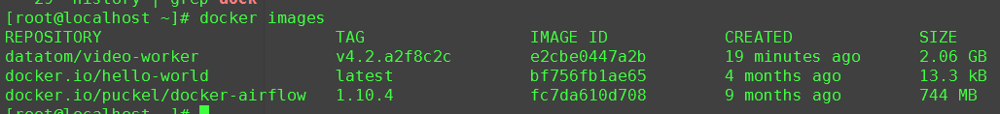

记录一下自己在工作中常用的docker命令
安装
yum -y install docker
systemctl start docker
验证是否可以正常运行
docker run hello-world
镜像
镜像构建通过dockfile
docker build -t datatom/video-worker:v4.2.0 -f Dockerfile .
镜像打包
docker save -o video-worker.v4.2.0.tar datatom/video-worker:v4.2.0
镜像导入
docker load -i video-worker.v4.2.0.tar
查看镜像
docker images

删除镜像
docker rmi IMAGEID
如果当前镜像正在被容器使用，则需要先删除容器，可以使用如下命令删除
docker rm $(docker ps -a | grep IMAGEID|awk '{print $1}') -f
docker rmi IMAGEID
删除none镜像
docker rmi $(docker images | grep '<none>'|awk '{print $3}') -f
镜像运行
docker run -it e2cbe0447a2b /bin/bash
镜像运行时添加环境变量
docker run -e MEDIA_REDIS_IP=127.0.0.1 -e MEDIA_REDIS_PORT=5555 -it d3796bd153f8 /bin/bash
容器
查看正在运行的容器
docker ps -a
停止容器
docker stop CONTAINERID
删除容器
docker rm CONTAINERID
强制删除
docker rm CONTAINERID -f
tag
修改镜像的tagid
docker tag f92b7e4509da datatom/image-worker:v4.1.1